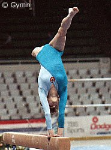

Vera Kolesnikova (USSR)
1986 Goodwill Games AA Champion

Medal Total
World Championships: 1 Gold
Vera was born on October
7, 1968 in Perlevka (a small village outside Voronezh). Her first coach
was Nikolai Vodianikh. After a few years with Vodianikh, she moved to the Spartak club in
Voronezh and was coached by Rima Alexandrova (who is married to famous gym coach
Yuri Shtukman).
Competition Results
- 1981
- Junior Medico Cup: 1st AA
Schoolchildren's Spartakiade (Candidate for Master): 4th Team, 3rd AA
1982
USSR Championships: 17th AA
- 1983
- Catania Cup: 2nd AA
- Gymnastics Hit Parade of Rome: 2nd UB, 2nd B, 3rd V
Riga International: 10th AA, 3rd V
RSFSR Spartakiad: 3rd AA, 1st FX
- USSR Championships: 12th AA
- USSR Cup: 3rd AA, 4th V, 5th
FX
USSR Special Sports School Championships: 3rd Team, 2nd AA
-
- 1984
- Catania Cup: 2nd AA
- Jr. USSR Championships: 2nd AA, 2nd B
- Moscow News: 1st AA, 1st V, 2nd FX, 6th
B
-
- 1985
- Australian Games: 1st AA, 1st V, 1st UB, 4th B
- Chunichi Cup: 3rd V, 3rd B, 10th AA
- Riga International: 47th AA
- Tokyo Cup: 3rd B, 4th UB
USSR Cup: 6th AA, 4th UB, 6th FX
- World Championships: 1st Team
-
- 1986
- Goodwill Games: 1st Team, 1st AA, 1st B, 2nd UB
- USA-USSR Dual Meet: 1st Team, 3rd AA
- USSR Cup: 2nd AA, 3rd UB, 5th FX, 7th V
-
- 1987
- University Games: 1st Team, 2nd AA, 2nd UB, 2nd FX, 7th V
USSR Championships: 7th UB
USSR Cup: 10th AA
-
- 1988
- USSR Championships: 8th AA
- USSR Cup: 24th AA
-
This page was last updated on August 3, 2026.
© Gymn Forum
-